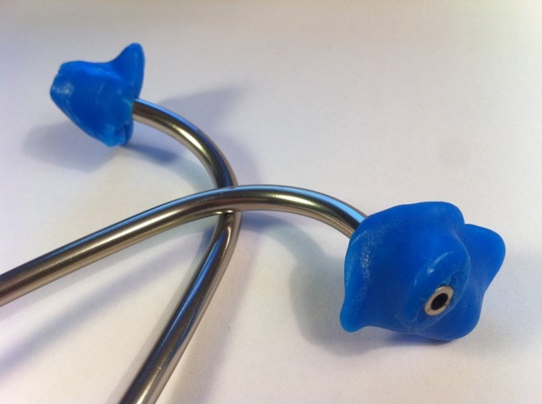

Sugar Reset Side Effects: Diabetes Meds, Caffeine, Pets and Who Should Skip It
The doses in Sugar Reset are small, so most healthy adults won't notice much. The real risks are specific: glucose-lowering medicine, caffeine sensitivity, pregnancy, and a dog that finds the bottle.

Key takeaways
- Most healthy adults won't notice side effects, because Sugar Reset's 200 mg blend is split among 22 ingredients.
- The main medical risk is low blood sugar for people on insulin or other diabetes drugs, since gymnema and chromium may add to their effect. Talk to your doctor before using it.
- It contains guarana, a natural caffeine source. The amount isn't stated, so caffeine-sensitive people should start with one dropper.
- It contains xylitol, which is toxic to dogs even in small amounts. Store the bottle where pets can't reach it.
- Skip it if you're pregnant, nursing or under 18, and never use it as a substitute for diabetes treatment.
Sugar Reset side effects are usually minimal for healthy adults because each ingredient is present in only a few milligrams. The risks that matter are low blood sugar if you take insulin or diabetes pills, caffeine from guarana, and xylitol, which is toxic to dogs. Pregnant or nursing women and anyone under 18 should skip it.
This page goes through each of those in detail, with what to watch for and what to do. It's based on the Sugar Reset label and on public guidance from the NIH, the FDA and MedlinePlus. For the formula, price and verdict, read our full Sugar Reset review. One rule runs through everything below: never stop or change a prescribed medicine because you started a supplement.

Sugar Reset: check today's price
A liquid chromium and botanical blend for metabolic balance. One or two droppers a day. Sold only on the official site, with a 60-day money-back guarantee.
See the official price →What are the most common Sugar Reset side effects?
For most people, probably none. The disclosed chromium dose is 0.7 mcg per serving, about 2% of the Daily Value, and the 200 mg blend works out to roughly 9 mg per ingredient on average. That's a small exposure.
Still, a few mild reactions are possible, especially at two droppers a day:
- Jitteriness or trouble sleeping from guarana's caffeine, more likely if you also drink coffee or take it late in the day.
- Mild stomach upset, which can come from capsicum (chili pepper extract), grapefruit extract or the liquid itself on an empty stomach.
- A strange aftertaste. Gymnema is known for temporarily dulling the taste of sweetness, and stevia leaves a bitter note for some people.
- Headache, which can come with caffeine, or with caffeine withdrawal if you stop suddenly after heavy use.
If something mild shows up, drop to one dropper, take it with breakfast, and see whether it fades over a week. If it doesn't, stop.
Keep in mind that a new supplement often gets blamed for coincidences. If you start Sugar Reset during a stressful week or alongside a new diet, note what else changed before deciding it's the cause.

Can Sugar Reset cause low blood sugar with diabetes medicine?
This is the most important question on the page. Two things in Sugar Reset have been studied for their effect on glucose. Gymnema, an herb from India, has small human trials suggesting it may lower blood sugar and dull the taste of sweets. Chromium is involved in how insulin works, and trials using hundreds of micrograms have shown mixed effects.
On their own, at Sugar Reset's doses, those effects are likely small. The chromium is trivial, and label math caps the gymnema at no more than about 25 mg per milliliter. But no one outside the manufacturer knows the real gymnema amount, and medicines that lower blood sugar don't leave much margin for surprises. If you take one, any extra glucose-lowering push carries a risk of hypoglycemia.
| Type of diabetes medicine | Examples | Low blood sugar risk on its own |
|---|---|---|
| Insulin | Any injected or pumped insulin | Higher |
| Sulfonylureas | Glipizide, glyburide, glimepiride | Higher |
| Meglitinides | Repaglinide, nateglinide | Moderate |
| Metformin | Glucophage and generics | Low when used alone |
| GLP-1 drugs and SGLT2 inhibitors | Semaglutide, empagliflozin and others | Low when used alone, higher when combined with insulin or sulfonylureas |
If you're on anything in the higher-risk rows, don't start Sugar Reset without talking to your doctor. If you're on any of them, keep monitoring your glucose exactly as you've been told to, and tell your care team you've added a supplement. Don't lower your medicine dose on your own to "make room" for it.
Why not just trust that the doses are tiny? Because supplements aren't tested by the FDA before they're sold, and a label total tells you nothing about batch-to-batch consistency. The FDA has also warned more than once about products sold for blood sugar that turned out to contain undeclared prescription drugs. We have no evidence that applies to Sugar Reset. It's simply the reason doctors ask to see anything you take when your medicines can push glucose too low.
Signs of low blood sugar to know
MedlinePlus lists these common warning signs of hypoglycemia:
- Shakiness, sweating or chills
- A fast or pounding heartbeat
- Sudden hunger, nausea or irritability
- Dizziness, blurry vision or confusion
- Headache, weakness or unusual tiredness
If you have diabetes and notice these, follow the plan your care team gave you, which usually means checking your glucose and taking fast-acting carbohydrate. Severe symptoms such as confusion, seizures or passing out are an emergency: call 911. Our article on blood sugar swings and brain fog explains why even milder dips can feel like a mental fog.
How much caffeine is in Sugar Reset?
The label doesn't say. Guarana seed extract is the third ingredient in the 200 mg blend, so it can't be more than about 66 mg per milliliter, and guarana extracts are only partly caffeine. Green tea, seventh on the list, adds a little more. Realistically, one dropper probably contains well under the caffeine in a cup of coffee.
That's reassuring for most people, but "probably" is the honest word. Without a stated number, you can't add it up precisely against your coffee, tea or energy drinks. The Mayo Clinic suggests most healthy adults keep caffeine to about 400 mg a day, and some people react to far less.
Be more careful if you have an irregular heartbeat, anxiety, insomnia, high blood pressure or acid reflux, or if you take stimulant medicines such as those for ADHD. Start with one dropper in the morning, not in the evening. Our explainer on caffeine and memory covers how caffeine affects focus and sleep.
Why is Sugar Reset dangerous for dogs?
Sugar Reset's other ingredients include xylitol, a sugar alcohol used as a sweetener. It's safe for people in normal amounts. For dogs it's a poison.
According to the FDA, xylitol causes a dog's pancreas to release a rapid surge of insulin, which can drop blood sugar to dangerous levels within 10 to 60 minutes. Larger exposures can also cause liver failure. The label doesn't state how much xylitol is in the bottle, so assume any amount a dog swallows is a risk. A curious dog chewing through a dropper bottle is the realistic scenario.
- Store the bottle up high or in a closed cabinet, never on a nightstand, coffee table or low shelf.
- Don't leave the dropper out after use, and wipe up any spills.
- Don't put drops in food or drink you might share, or leave a glass with it where a pet can reach.
- Watch for vomiting, weakness, staggering, collapse or seizures if a dog may have gotten into it.
If you think your dog swallowed any, call your veterinarian or an emergency animal clinic right away, or the ASPCA Animal Poison Control Center at (888) 426-4435. Don't wait for symptoms. Fast treatment matters.
The label also says to keep the bottle out of the reach of children. A sweet-tasting liquid with a dropper looks a lot like a children's medicine, and the caffeine and herbs aren't meant for kids. If a child swallows a significant amount, call Poison Control at 1-800-222-1222.
Can Sugar Reset interact with other medicines?
Beyond diabetes drugs, a few combinations deserve a word. At Sugar Reset's doses, most of these are theoretical, but you can't confirm the doses, so it's worth asking a pharmacist.
| Medicine | Ingredient involved | Why it matters |
|---|---|---|
| Insulin and diabetes pills | Gymnema, chromium | Possible added glucose-lowering effect |
| Stimulants (ADHD medicines, decongestants) | Guarana, green tea | Extra caffeine can add to jitteriness and heart rate |
| Blood thinners such as warfarin | Panax ginseng, green tea | Both have been reported to affect warfarin; tell your prescriber |
| Antidepressants (SSRIs, MAOIs) | L-tryptophan, L-tyrosine, guarana | Small amounts, but these can affect serotonin and stimulant response |
| Blood pressure medicines | Licorice-derived glycyrrhizinate, caffeine | Large amounts of licorice compounds and caffeine can raise blood pressure |
Bring the label, or a photo of it, to your next pharmacy visit. A pharmacist can check your full medicine list against all 22 ingredients in a few minutes.
Is Sugar Reset safe during pregnancy or breastfeeding?
No, not without your doctor's explicit approval. The label tells pregnant and nursing women to consult a physician before use, and we'd treat that as a firm no for most people. Guarana adds caffeine, which pregnant women are advised to limit. Several ingredients, including coleus forskohlii, raspberry ketones, African mango and the amino acid mix, have no safety data in pregnancy at all.
Gestational diabetes is a separate concern. It needs medical management, and a supplement shouldn't play any part in that unless your obstetrician recommends it. The label's caution also applies to anyone under 18.
Breastfeeding has its own wrinkle. Caffeine passes into breast milk, and young babies clear it slowly, so even modest amounts can leave some infants fussy or wakeful. The herbs in the blend haven't been studied in nursing mothers. Waiting until you've weaned costs you nothing.
Can Sugar Reset upset your stomach?
Occasionally. Xylitol can cause gas and loose stools, but that usually takes several grams, far more than a dropper is likely to contain. Capsicum and grapefruit extracts can irritate a sensitive stomach, and some people simply dislike taking a concentrated liquid on an empty stomach.
Taking it with food usually fixes that. If you have reflux, ulcers or a sensitive gut, start with one dropper after a meal. If symptoms continue for more than a few days, stop.
Who should skip Sugar Reset?
- Anyone on insulin or a sulfonylurea, unless their doctor approves it and they're monitoring closely.
- Pregnant or breastfeeding women, and anyone under 18.
- People sensitive to caffeine or with heart rhythm problems, uncontrolled high blood pressure or severe anxiety.
- People taking warfarin or several prescription drugs, until a pharmacist has reviewed the label.
- Households with dogs that can't store the bottle securely.
- Anyone hoping it will treat diabetes. It won't, and relying on it could delay care that works.
If you're in none of those groups, Sugar Reset's risk is low. Its benefit is also uncertain. Our analysis of whether Sugar Reset works weighs that side of the equation.
Is Sugar Reset safe to take long term?
There's no long-term safety study on Sugar Reset. Most of its ingredients have been used in foods or supplements for years, generally at much higher amounts, without major safety signals in healthy adults. That's some comfort.
Two caveats apply. A few ingredients in the blend, such as raspberry ketones and coleus forskohlii, have very little human safety data at any dose. And when a blend has 22 parts, it's hard to pin down which one is behind a reaction if one shows up. If you plan to use it for months, mention it at your next checkup, and ask whether routine blood work (glucose, kidney and liver numbers) looks the same as before. Taking a break every few months is also a reasonable way to see whether it's doing anything for you at all.
When should you stop Sugar Reset and call a doctor?
- Any episode of low blood sugar, or readings lower than usual after starting it
- A racing or irregular heartbeat, chest pain or severe headache (call 911 for chest pain)
- Persistent insomnia, anxiety or tremor
- Hives, swelling of the face or throat, or trouble breathing (call 911)
- Stomach pain, vomiting or diarrhea lasting more than a couple of days
- Yellowing of the skin or eyes, or dark urine
Bring the bottle with you. For more on managing sugar cravings without supplements, see our guide to sugar and brain fog, or browse the energy and metabolism section.
Sugar Reset: check today's price
A liquid chromium and botanical blend for metabolic balance. One or two droppers a day. Sold only on the official site, with a 60-day money-back guarantee.
See the official price →Frequently asked questions
Can I take Sugar Reset with metformin?
Metformin alone rarely causes low blood sugar, but you should still ask your doctor first and keep monitoring as usual. Don't change your metformin dose because of a supplement.
Is Sugar Reset safe for cats?
Xylitol's danger is best documented in dogs. No pet should be given Sugar Reset, so store it out of reach of all animals and call your vet if one swallows any.
Will Sugar Reset keep me awake at night?
It might if you're caffeine-sensitive, because guarana contains caffeine. Taking it in the morning and starting with one dropper lowers the chance.
Does Sugar Reset cause weight gain or water retention?
There's no reason to expect it. Licorice compounds can cause fluid retention in large amounts, but the glycyrrhizinate in Sugar Reset is one small part of a 200 mg blend.
Can I take two droppers at once?
The label allows one or two droppers a day. If you're new to it or sensitive to caffeine, start with one and only increase if you tolerate it well. Don't exceed two.
Is Sugar Reset safe for people with kidney disease?
Ask your nephrologist first. People with kidney disease often need to limit certain supplements and amino acids, and the label advises anyone with a medical condition to consult a physician.
Does Sugar Reset expire or need refrigeration?
The label says to keep it away from heat, light and humidity and store it in a cool, dry place. It doesn't ask for refrigeration. Check the bottle for the expiration date.
Fits your situation?
If none of the cautions apply to you, official Sugar Reset orders come with a 60-day money-back guarantee. Check the current price on the official site.
See Sugar Reset's official price →Related: Sugar Reset review: label, price and verdict · Does Sugar Reset work? · Sugar Reset ingredients explained · Blood sugar swings and brain fog · Caffeine and memory
Image: Toby Bateson / Wikimedia Commons / CC BY-SA 3.0